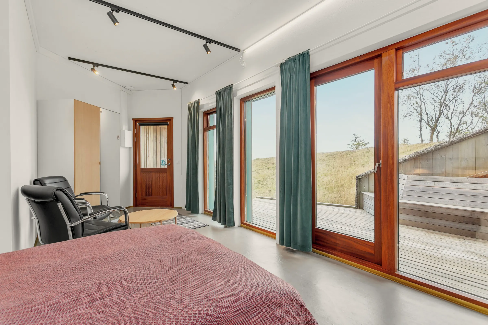
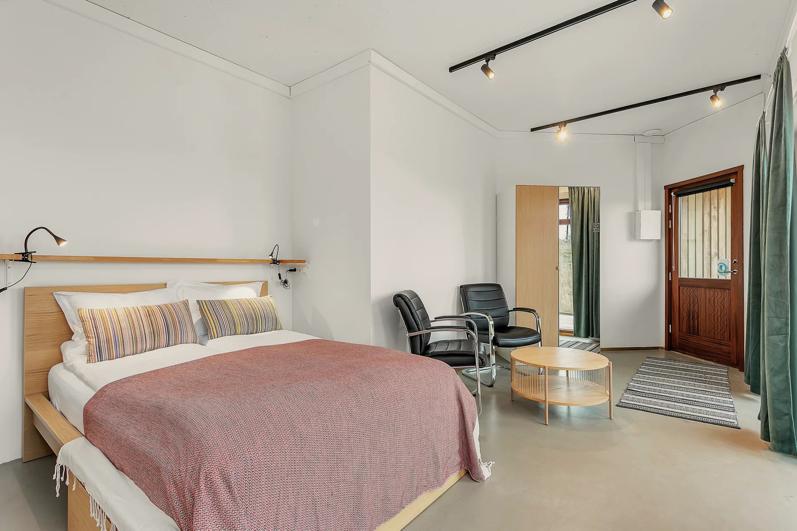
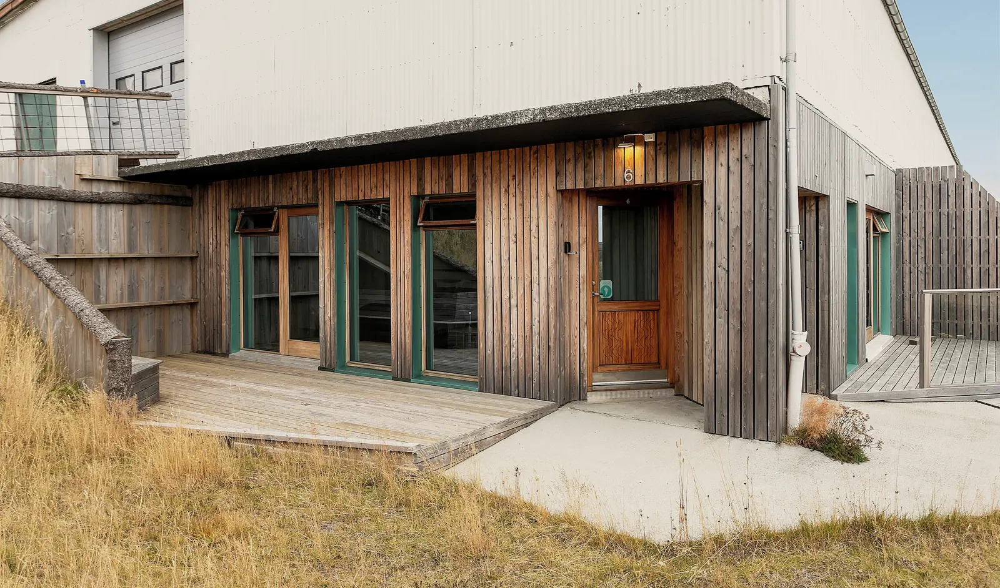
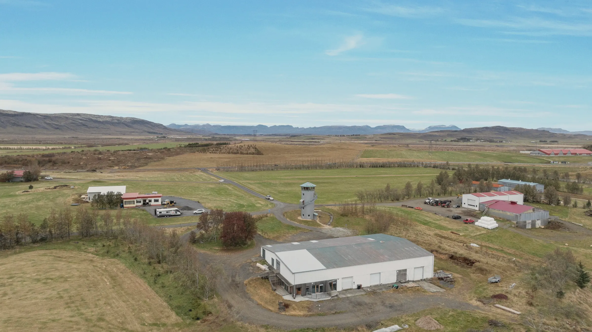
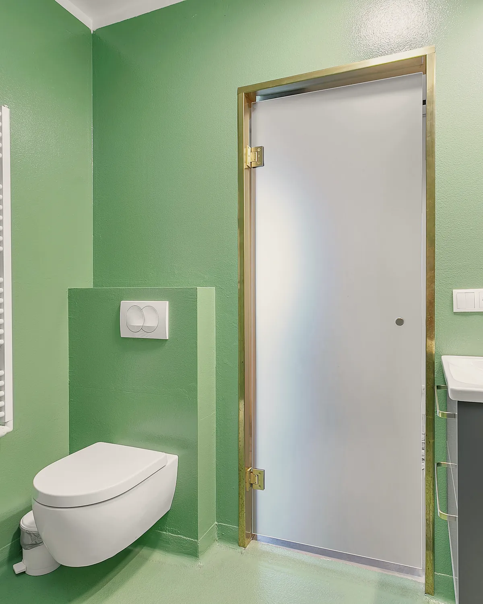
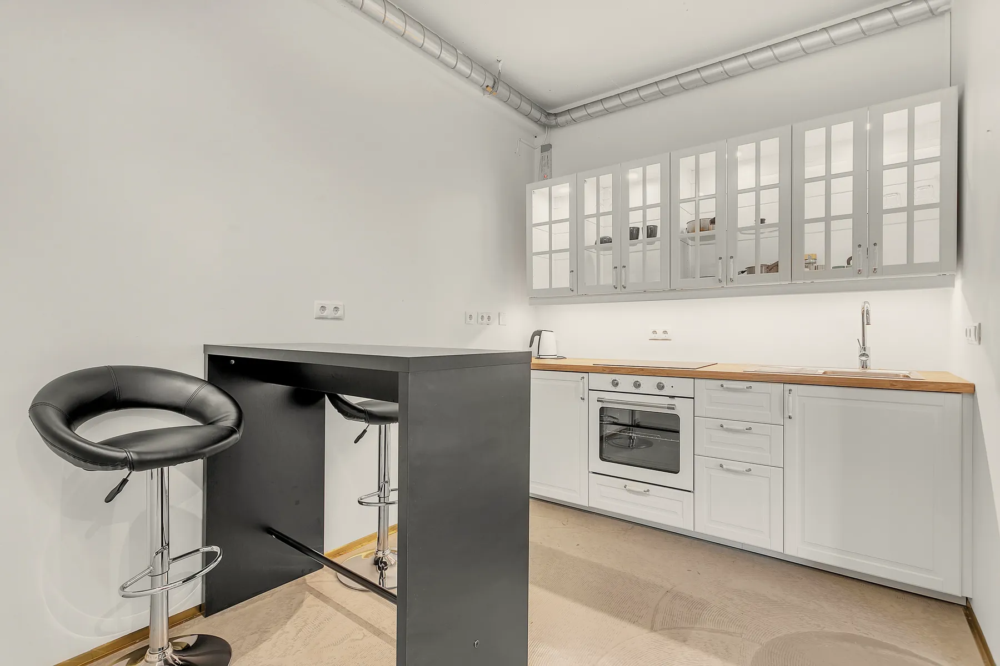

the old hatchery
a peaceful escape in the heart of iceland, where rustic charm meets modern comfort, and every stay feels like coming home under the northern sky.
- 2, in a double bed
- 4 sizes, 14 to 45 m²
- fridge, stove and kettle
- self check-in, free parking
- 15:00 to 21:00; tell the host your arrival time
- by 11:00
a rare retreat in rural iceland
Breathe in the stillness of Iceland’s untouched landscape. What once stood as a modest hatchery now welcomes travelers as a peaceful hideaway, blending rustic character with modern design.
Enjoy mornings bathed in golden light and evenings lit by dancing auroras. From your cozy suite, nature is never more than a glance away.

a view you won’t forget.
Luxury in Simplicity
Minimalist interiors with warm, natural textures: everything you need, and nothing that distracts.
Unforgettable Views
Endless fields, golden sunsets, and the magic of the Northern Lights, all visible from your cozy retreat.
Effortless Arrival
Easy self check-in and free parking make your stay smooth and stress-free from the moment you arrive.
Tailored Experience
Whether you’re here to disconnect alone or escape with someone special, the Hatchery offers calm, privacy, and authenticity.


the rooms
At Klettar, The Old Hatchery, every suite is a peaceful reflection of its Icelandic surroundings. Originally part of a rural hatchery, each space has been carefully reimagined to blend cozy simplicity with raw natural beauty. Expect clean lines, warm wooden touches, and views that connect you to the land, all while enjoying complete privacy and quiet.
- Scenic countryside views
- Wake up to golden fields, snowy landscapes, and wide-open skies, all from your room or private terrace.
- Private kitchenette
- Prepare simple meals with your in-room fridge, stove, kettle, and cooking basics: no need to leave comfort behind.
- Designed for two
- Sleep soundly in a soft double bed with cozy linens, natural textures, and a serene minimalist design.




klettar tower
where every window opens to iceland’s wild beauty: golden fields, distant mountains, and skies that dance with northern lights.
check dates
Choose your arrival, then your departure.
Continue to Klettar’s booking pageYour dates go straight into Klettar’s own booking page, where availability and the rate are confirmed. Prices in euros.